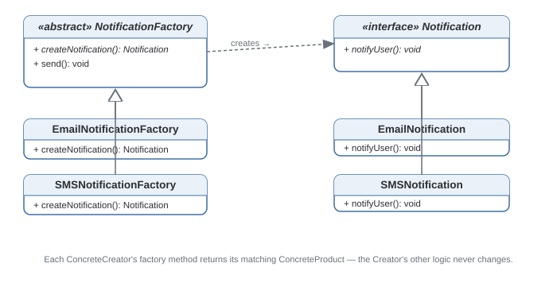

Factory Method Pattern
Lets a class defer instantiation to subclasses — a "factory method" decides which concrete class gets created, so the calling code never has to.
Theory
The problem, in plain terms
You're building a notification system. Today it sends email. Tomorrow product wants SMS too. If every place in your code that sends a notification does new EmailNotification() directly, adding SMS means hunting down every one of those call sites. Worse, the code that sends notifications now has to know about every type that exists, even though all it wants to do is "send a notification."
Factory Method separates deciding which class to instantiate from using the object once you have it. The calling code asks a factory for a notification and gets back something satisfying the Notification interface — it never types new EmailNotification() itself.
How it's built
There's a Creator (often abstract) with a factory method that returns a Product. Each ConcreteCreator overrides it to return a specific ConcreteProduct. The rest of the Creator's logic — the part that actually uses the product — is written once, against the Product interface, and never changes when a new product type is added.
Write the "use the product" logic once in the base Creator, against the interface. Only the creation step (createNotification()) should differ between subclasses.
Calling this pattern anytime a function returns an object. A static method with a big switch statement is a "simple factory" — useful, but not Factory Method, which specifically relies on subclassing and polymorphism.
Where it bites you
Every new product type means a new Creator subclass — more classes to navigate, and for a small, stable set of types that can be more ceremony than value. It also doesn't solve the problem of who decides which concrete factory to use in the first place — something, somewhere, still makes that call. Factory Method just keeps that decision from leaking into the code that uses the product.
Diagram

When to Use
- You don't know ahead of time exactly which class you'll need — it depends on config, input, or subclassing.
- You want to add new product types without touching code that uses existing products.
- Creation involves enough setup logic to deserve its own method/class.
- You only have one or two product types that aren't going to grow — a plain constructor is more honest.
- The "products" don't share a meaningful common interface.
Real-World Examples
- Java's
Calendar.getInstance()— the concrete class depends on locale/timezone at runtime; the caller never picks it directly. ResourceBundle.getBundle()— returns a locale-specific subclass without the caller knowing which one.- Document editors — "create document" might return a Word, Spreadsheet, or Presentation document, all behind a common
Documentinterface. - SLF4J's
LoggerFactory.getLogger()— returns different concrete logger implementations depending on what's on the classpath. - Cross-platform UI toolkits —
createButton()returns a Windows/Mac/Linux button depending on the OS; the rest of the app just calls.render().
Interview Questions
Click a question to reveal the answer.
What's the difference between Factory Method and a "simple factory"?
A simple factory is one method (often static) with a switch/if-else returning different concrete types — convenient, but not a GoF pattern, and it becomes a bottleneck as types grow since everyone edits the same method. Factory Method uses inheritance: an abstract Creator declares the factory method, and each ConcreteCreator subclass overrides it. Adding a type means adding a subclass, not editing existing code.
How does Factory Method relate to the Open/Closed Principle?
It's a textbook example. The code that uses products is closed for modification — written once against the Product interface. The system stays open for extension because adding a new product type just means adding a new ConcreteCreator/ConcreteProduct pair, with zero changes to existing classes.
When would you choose Abstract Factory over Factory Method?
Factory Method creates one product. Abstract Factory creates families of related products that need to stay consistent with each other (a "Windows" factory producing a Windows button AND a Windows checkbox, so you never mix a Windows button with a Mac checkbox). If you only need one kind of object at a time, Factory Method is simpler and sufficient.
Can the Creator provide a default implementation of the factory method?
Yes — common in practice. The base Creator can implement the factory method to return a default product, and only some subclasses override it. This avoids forcing every subclass to implement the method if most are happy with the default.
Code & Output
Same pattern, four languages. Every output shown here was captured from a real run.